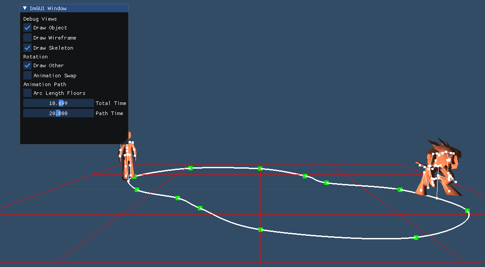

PORTFOLIO
Dylan Washburne
Sample Works
MS CS Animation Engine
Utilizing OpenGL to import and animate 3d models. Includes quaternion-based calculations, skeleton rigging, path traversal, inverse kinematics, and physical simulations.
(Repo link not visible due to institute's guidelines)
ConCaveity
Made for GAM 541 Master's Game Project at DigiPen, modifying my personal 2d game engine in a 4-man group. Implements platforming and several art enhancements to create a feature-length stealth game.


Excessively Buff
Made for the GMTK Game Jam 2020, a 48 hour game jam where I had to conceptualize, build, and release a game adhering to the theme "out of control".
Game Engine
Made for CS 529 Fundamentals of Game Development for my Master's program at Digipen, I built my own game engine from the ground up. This includes frame rate controllers, OpenGL integration, and a massive emphasis on component-based design to keep everything scalable and efficient.

3D Environment
Made for CS 541 Advanced Computer Graphics for my Master's program at Digipen. This involved constructing a perspective matrix, applying lighting, materials, reflections, and normal maps for a very high-fidelity scene.